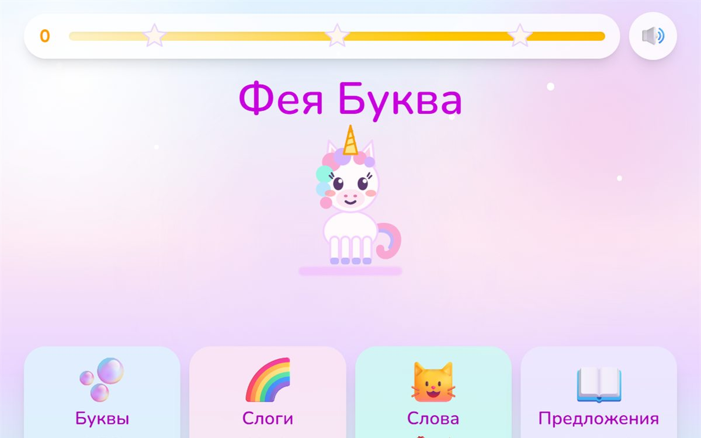
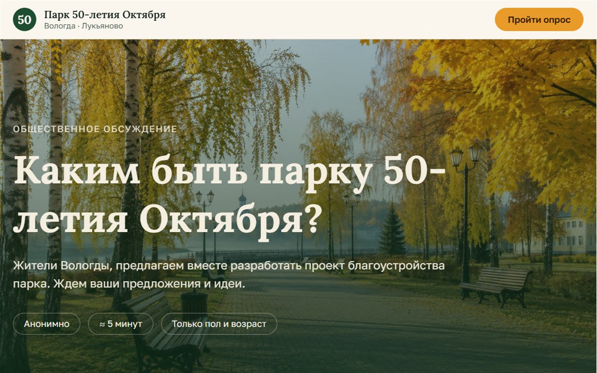
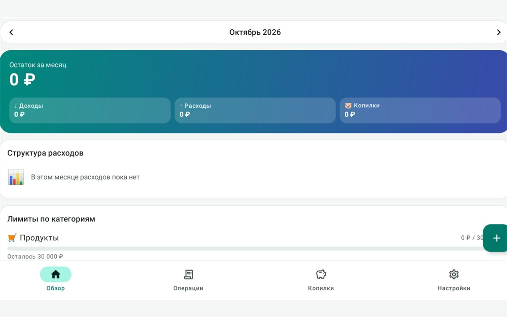

Уханова Елена Сергеевна
Вайбкодер и создатель цифровых решений
Превращаю идеи в работающие цифровые продукты
Создаю сайты, интерфейсы и инструменты с помощью искусственного интеллекта. Соединяю эстетику, логику и технологии, чтобы решать конкретные задачи.
Что я могу создать
-
Персональные сайты и лендинги
Страница, на которой понятно, кто вы и зачем с вами говорить. Человек быстро схватывает суть и видит, как продолжить.
-
Интерактивные веб-приложения
Интерфейс, где можно не только прочитать об идее, но и пройти её: выбрать, сравнить или проверить сценарий.
-
Прототипы цифровых продуктов
Ранняя рабочая версия. Её можно показать другим и по ней решить, что оставить, что изменить и куда двигаться дальше.
-
Чат-боты и инструменты автоматизации
Помощник для повторяющихся вопросов и действий. Рутина собирается в ясный сценарий, а живое внимание остаётся людям.
Обо мне
Мне важно, чтобы цифровой продукт был не только красивым, но и понятным. Начинаю с задачи, продумываю пользовательский сценарий и использую инструменты искусственного интеллекта для реализации и проверки решений.
Как строится работа
Сначала задача и прототип, затем разработка, проверка и передача результата.
-
Обсуждение задачи
Выясняем, для кого продукт и какой результат нужен.
-
Прототип
Собираю раннюю версию, чтобы стал виден сценарий.
-
Разработка
Делаю страницу или инструмент, которыми можно пользоваться.
-
Проверка
Проверяю понятность, логику и вид на разных экранах.
-
Передача результата
Отдаю работу и коротко объясняю, как ей пользоваться.
Мои проекты
-

Фея Буква
Игра для детей, которые учатся читать. Четыре задания: буквы, слоги, слова и предложения. Ребёнка встречает и ведёт по игре Фея Буква.
-

Опрос о благоустройстве парка
Анонимный сайт для жителей Вологды. Можно рассказать, как часто бываете в парке 50-летия Октября в Лукьяново, отметить проблемы, оценить парк и предложить, каким его сделать: отдых, спорт, выгул животных и другие зоны.
Открыть опрос -

Семейный бюджет
Мобильное приложение для учёта семейных денег. В нём есть обзор месяца, доходы и расходы, категории, участники семьи и копилки.
Уханова Елена Сергеевна
Обсудим вашу идею
Расскажите, какую задачу нужно решить и для кого. По этому описанию становится понятно, что уместнее: страница, прототип или инструмент.